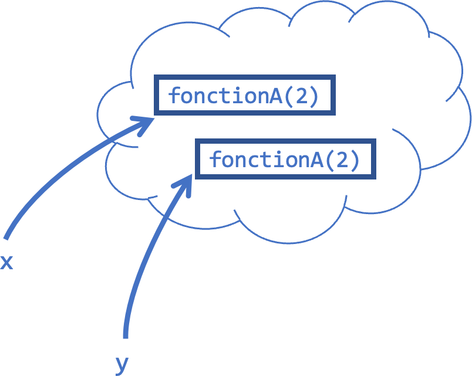
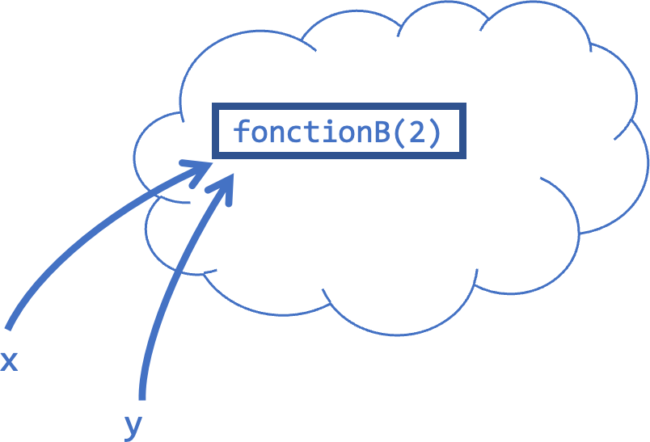
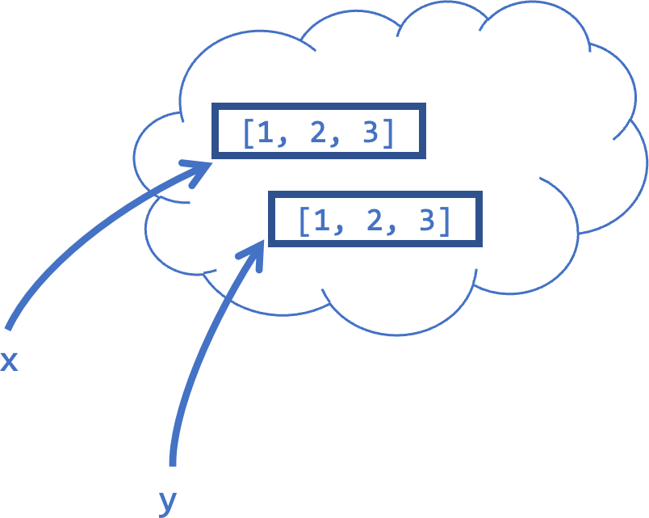
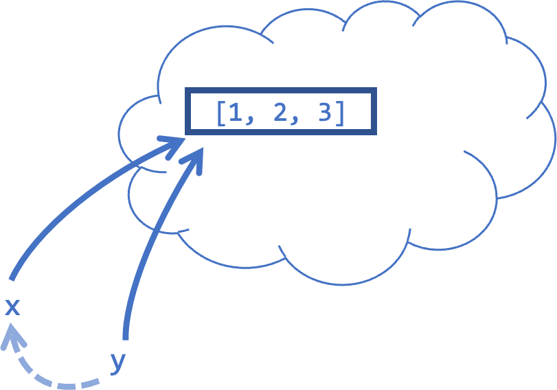
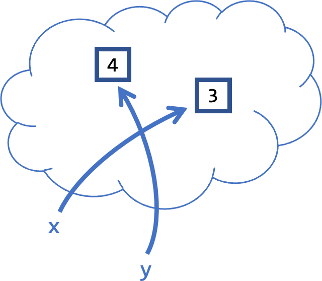
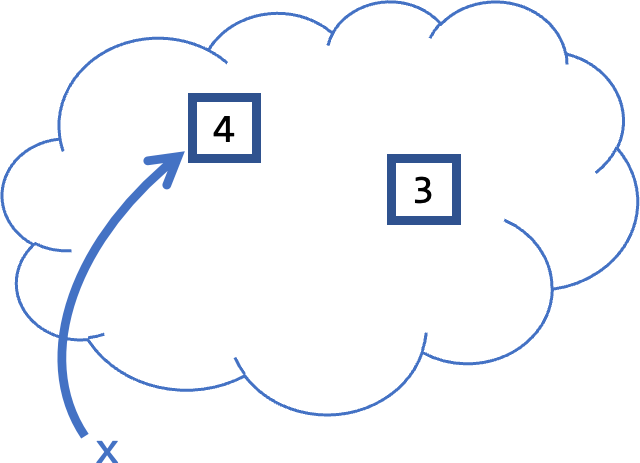
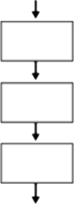

print('Ligne 1')
print('Ligne 2')
print('Ligne 3')Ligne 1
Ligne 2
Ligne 3Notes partielles — année 2025-26 (ARCHIVE)
Le but de la leçon d’aujourd’hui est de :
print() pour afficher des informationsToutes les informations importantes se trouvent sur le Moodle du cours.
CO 020, CO 023, CO 4, CO 5 (avec ordinateurs)
INF 1, INF 2 (ordis personnels)
Le semestre d’automne est séparé en deux parties de 6 semaines chacune :
Aucun prérequis n’est demandé !
La matière sera évaluée à la fin de chaque partie.
Théorie et traitement de l’information à l’aide de programmes mis en œuvre sur ordinateurs. (Le Robert, 2024)
Le langage que nous allons utiliser dans le cadre de ce cours est le langage Python, car il est…
Dans ce cours, nous programmerons dans l’environnement de développement intégré (IDE) Jupyter Notebook sur la plateforme Noto.
Python exécute les instructions ligne par ligne, de haut en bas.
print('Ligne 1')
print('Ligne 2')
print('Ligne 3')Ligne 1
Ligne 2
Ligne 3#) sont ignorés, même au milieu d’une ligneprint('Ligne 1')
# print('Ligne 2') # Ceci est ignoré
print('Ligne 3') # Tout après # est un commentaireLigne 1
Ligne 3Remarque. Ce comportement peut être observé en exécutant Python avec un débogueur (debugger).
Comme mentionné précédemment, un programme informatique agit sur un ensemble de données (appelé input data).
Un bon programme est réutilisable un nombre arbitraire de fois: les données d’entrée changent, mais la même fonctionnalité est effectuée.
La manière standard de structurer un programme consiste à définir d’abord les fonctions, qui ne dépendent pas des données…
…puis à appeler ces fonctions sur les données.
Illustrons avec une bonne et une mauvaise façon d’écrire un programme. Supposons que quelqu’un nous demande de calculer l’aire d’un triangle avec une base de 9 et une hauteur de 3. Comme nous connaissons la formule
\[\text{Aire d'un triangle} = \dfrac{\text{base} \times \text{hauteur}}{2},\]
une façon de répondre à cette demande serait de traiter Python comme une calculatrice et simplement calculer.
print('L\'aire vaut', 9 * 3 / 2)L'aire vaut 13.5Mais, dans la plupart des cas, il est préférable d’écrire un autre type de programme. Un qui comprend la fonctionnalité que nous essayons d’implémenter et ensuite utilise cette fonctionnalité sur les données d’entrée.
def aire_triangle(base,hauteur):
return base * hauteur / 2
print('L\'aire vaut', aire_triangle(9,3))L'aire vaut 13.5On peut changer les données d’entrée:
def aire_triangle(base,hauteur):
return base * hauteur / 2
print('L\'aire vaut', aire_triangle(12,5))L'aire vaut 30.0Ici, nous utilisons une fonction pour implémenter la fonctionnalité, avant de l’appliquer. Nous verrons comment construire une fonction dans un instant. Pour l’instant, parlons moins des données d’entrée, et plus généralement des données dans Python.
Remarque. Les données ne sont pas forcément des nombres!
Les données dans Python sont portées par des objets. Chaque objet a un type qui détermine sa structure et les opérations qu’on peut effectuer sur lui.
print(type(42))<class 'int'>print(type(12.3))<class 'float'>print(type('Appelez-moi Ishmael'))<class 'str'>print(print('Appelez-moi Ishmael' + 4))--------------------------------------------------------------------------- TypeError Traceback (most recent call last) Cell In[9], line 1 ----> 1 print(print('Appelez-moi Ishmael' + 4)) TypeError: can only concatenate str (not "int") to str
print(type(True))<class 'bool'>print(type(None))<class 'NoneType'>print(type(type(None)))<class 'type'>Remarque. Les int et les float sont tous deux des types numériques.
+, -, * et /.print(4+12)16print(3-9)-6print(22*3)66print(12/8)1.5Remarque. Dans un calcul, un int sera considéré comme un float au besoin.
** calcule des puissances réelles.print(2**3)8// et % calculent respectivement le quotient et le reste de la division entière (voir Série 1).+ effectue la concaténation de deux str.print('Appelez-moi' + ' ' + 'Ishmael')Appelez-moi Ishmaelstr * int permet la concaténation d’un str avec lui même.print('ha' * 3)hahahaprint('under my umbrella' + ' ella' * 2 + ' eh' * 3)under my umbrella ella ella eh eh ehRegardons à nouveau la structure d’un programme Python.
def fonction(x):
[...]
return y
fonction(input_data)Comme mentionné précédemment, une fonction implémente une fonctionnalité qui peut généralement être appelée plusieurs fois sur différentes données (input_data). En pratique, input_data sera une collection d’objets, chacun ayant un certain type.
La fonctionnalité implémentée par une fonction consiste en la réalisation de certaines tâches qui peuvent (ou non) aboutir à la création d’un nouvel objet que la fonction renvoie (return).
La fonction print permet au programme d’afficher des informations sur l’écran (ou d’écrire des informations à d’autres endroits). Elle fonctionne ainsi :
str associée à cet objet dans la sortie standard (sur l’écran),None.Remarque. Bien que print retourne un objet, ce qu’elle retourne n’est pas la partie intéressante de sa sortie. On ne devrait donc jamais retourner un print.
def aire_triangle(base,hauteur):
return print('L\'aire vaut', base * hauteur / 2)
aire_triangle(9,3)L'aire vaut 13.5def aire_triangle(base,hauteur):
return print('L\'aire vaut', base * hauteur / 2)
aire_triangle(9,3)*2L'aire vaut 13.5--------------------------------------------------------------------------- TypeError Traceback (most recent call last) Cell In[22], line 4 1 def aire_triangle(base,hauteur): 2 return print('L\'aire vaut', base * hauteur / 2) ----> 4 aire_triangle(9,3)*2 TypeError: unsupported operand type(s) for *: 'NoneType' and 'int'
L’avantage du fait que print retourne un objet None est que cela n’a aucun effet sur le programme, c’est invisible pour la machine. Donc cela peut être utilisé pour donner des informations à l’utilisateur sans interférer.
def aire_triangle(base,hauteur):
print('Je calcule l\'aire d\'un triangle...')
return base * hauteur / 2
print('A1 vaut', aire_triangle(9,3))
print('A2 vaut', aire_triangle(1,5))Je calcule l'aire d'un triangle...
A1 vaut 13.5
Je calcule l'aire d'un triangle...
A2 vaut 2.5Remarque. Donner plusieurs entrées à print lui fait imprimer la concaténation de toutes les str correspondantes.
Les caractères d’échappement permettent d’inclure des caractères spéciaux dans les chaînes de caractères. Ils commencent par un backslash \
\n : nouvelle ligne\t : tabulation\\ : backslash littéral\' : guillemet simple (apostrophe)\" : guillemet doubleprint('Première ligne\nDeuxième ligne')
print('Nom:\tJean\nÂge:\t25')
print('Il a dit : \'Bonjour !\'')
print("Il a dit : 'Bonjour !'")Première ligne
Deuxième ligne
Nom: Jean
Âge: 25
Il a dit : 'Bonjour !'
Il a dit : 'Bonjour !'Par défaut, print ajoute automatiquement une nouvelle ligne à la fin. On peut modifier ce comportement avec le paramètre end :
###
print('Première ligne')
print('Deuxième ligne')
print('---')
print('Sans nouvelle ligne', end=' ')
print('suite sur la même ligne')
print('Avec un point', end='.')
print(' Fin')Première ligne
Deuxième ligne
---
Sans nouvelle ligne suite sur la même ligne
Avec un point. FinRemarque. Le paramètre end='' permet de ne rien ajouter à la fin.
Le paramètre sep contrôle comment les différents arguments de print sont séparés. Par défaut, c’est un espace :
###
print('a', 'b', 'c') # séparateur par défaut
print('a', 'b', 'c', sep='-')
print('a', 'b', 'c', sep=' | ')
print('Bond', 'James Bond', sep=', ')
print(2024, 12, 25, sep='/')a b c
a-b-c
a | b | c
Bond, James Bond
2024/12/25Le casting nous permet de convertir un objet d’un certain type en un objet d’un autre type (en fait, un nouvel objet est créé).
Les fonctions int et float peuvent créer un objet du type correspondant à partir d’un autre type numérique ou même d’un str.
print(int(2.7), ';', float(4))2 ; 4.0Similairement, la fonction str peut crée un objet de type str à partir d’un objet de type numérique.
print (2 * str (1.2) )1.21.2En fait, nous avons déjà vu un exemple de casting : rappelez-vous que print peut accepter plusieurs types comme arguments.
print('Ocean\'s', 5*5-7-7)Ocean's 11Cela fonctionne parce que print appelle en interne str sur tout argument qui lui est passé. Donc si un objet peut être casté en str, print peut l’afficher !
x = 12+4
print(x)16x = bytes([*range(115,121)]).decode()[:5]
print(x)stuvwx = 7
print(x)
x='Sept'
print(x)7
SeptRemarque. On peut affecter une variable, puis la réaffecter après.
x = 23
print(x, type(x))23 <class 'int'>x = bytes([*range(115,121)]).decode()[:5]
print(x, type(x))stuvw <class 'str'>Il vaut la peine d’examiner en détail ce qui se passe ici:
expression.variable comme référence pour désigner cet objet.Remarque. Cela diffère du fonctionnement de l’égalité en mathématiques. En particulier, ce n’est pas symétrique !
Que devrait-il se passer dans ce cas ?
from fonctions_ics import fonctionA
x = fonctionA(2)
y = fonctionA(2)
print(id(x),id(y))La dernière ligne print(id(x),id(y)) sert à vérifier si x et y correspondent au même objet. Est-ce le cas ? La réponse est… on ne peut pas le dire de manière générale ! Cela dépend de expression. Crée-t-elle un nouvel objet ou en trouvera-t-elle un pré-existant en mémoire ?
from fonctions_ics import fonctionA
x = fonctionA(2)
y = fonctionA(2)
print(id(x),';',id(y))13965904 ; 14390408

from fonctions_ics import fonctionB
x = fonctionB(2)
y = fonctionB(2)
print(id(x), ';', id(y))2788132 ; 2788132

Remarque. La plupart des fonctions en Python renvoient un nouvel objet. Ainsi, le plus souvent, les variables créées avec la même expression ne feront pas référence au même objet.
Les listes illustrent bien la remaque précédente : le simple fait d’écrire une liste amène Python à créer un nouvel objet.
x = [1,2,3]
y = [1,2,3]
print(x, ';', y, '\n', id(x), ';', id(y))[1,2,3] ; [1,2,3]
14786928 ; 14390408
[1,2,3], ce qui crée un objet qui est associé à la variable x (il s’agit d’un objet de type list, nous y reviendrons dans le cours 4).[1,2,3], ce qui crée un nouvel objet (avec la même valeur que l’objet référencé par x) qui est associé à la variable y.
x = [1,2,3]
y = x
print(x, y, '\n', id(x), id(y))[1, 2, 3] [1, 2, 3]
127110739461440 127110739461440En suivant ce que nous venons d’apprendre, voyons ce qui devrait se passer à la 2ième ligne :
x, cette expression renvoie un objet spécifique (en particulier, elle n’en crée pas).y comme référence à cet objet.
Remarque. En résumé, ce code attribue deux noms à l’objet initial : x et y. Il vaut mieux éviter ce type de commandes, car avoir plusieurs variables pour un même objet peut prêter à confusion.
Commençons par un exemple d’affectation simple avec une expression :
x = 3
y = x + 1
print(y)4

Mais, si x est déjà une variable, il n’y a aucune raison pour que nous ne puissions pas la réaffecter à une expression qui contient x !
x = 3
x = x + 1
print(x)4

Pour écrire cela de manière plus concise, on utilise x += 1.
Remarque. Python propose d’autres affectations avec opération :
x *= 3 (multiplication),x -= 5 (soustraction),x /= 2 (division),x %= 3 (modulo), etc.Tous fonctionnent selon le même principe :
x op= y est équivalente à x = x op y.
Python permet d’affecter plusieurs variables en une seule ligne :
x, y = 3, 4
print(x, y)3 4Cette opération fonctionne ainsi :
= (ici 3 et 4).Remarque. Le nombre de variables à gauche doit correspondre au nombre d’expressions à droite, sinon Python génère une erreur.
On peut nommer une variable comme on veut, à condition…
Remarque. Même si on peut nommer une variable comme on veut, il vaut mieux utiliser des noms parlants, et suivre les conventions de nommage de variables.
Regardons à nouveau la structure d’un programme Python.
Pour l’instant, nous nous sommes concentrés sur la dernière partie, en discutant le input_data. Notre objectif est maintenant d’étudier la première partie : les fonctions, comment les comprendre et les définir.
En informatique, une fonction est un ensemble d’instructions qui accomplit une tâche spécifique. Elle prend en entrée du input data (ou non) et retourne du output data (ou non).
Grâce aux fonctions, on peut :
On déclare une fonction par l’instruction def suivie par le nom de la fonction puis des paramètres entre parenthèses (si nécessaire), et finalement de deux points,
Le corps de la fonction doit suivre: c’est un bloc d’instruction qui doit être indenté.
Le corps de la fonction peut contenir une ou plusieurs instructions return. Ces instructions terminent l’exécution de la fonction et retournent un objet.
Remarque. Une fonction peut prendre zéro paramètres.
Une fois qu’une fonction a été définie, nous pouvons l’appeler. L’appel doit toujours avoir lieu après la définition.
Syntaxe de l’appel de la fonction: le nom de la fonction suivi, entre parenthèses, d’un argument pour chaque paramètre: c’est l’objet effectif qui est lié à ce paramètre.
def vol_cylindre(r, h):
v = 3.14 * r**2 * h
return v
v1 = vol_cylindre(2, 5)
print(v1)
v2 = vol_cylindre(5, 2)
print(v2)62.800000000000004
157.0Dès qu’un return est exécuté, le programme quitte la fonction et l’appel de la fonction est évalué à l’objet retourné (s’il y en a un). On peut afficher cet objet, l’affecter à une variable, l’utiliser dans un calcul…
Si aucune instruction return n’est exécutée, la fonction retourne l’objet None (ce qui signifie qu’elle ne retourne aucune expression).
Si l’instruction return x, y est exécutée, le programme quitte le code et la fonction retourne les deux objets x et y, qui peuvent être affectés simultanément à deux variables. De même, une fonction peut retourner n’importe quel nombre d’expressions.
def f(x):
print('Vous avez dit', x, '?')
answer = f(3)
print('f a retourné', answer)Vous avez dit 3 ?
f a retourné Nonedef g(num):
return num + 1
x = 3
print(x, 'augmenté de 1 vaut', g(x))3 augmenté de 1 vaut 4def carre(x):
perimetre = 4 * x
aire = x ** 2
return perimetre, aire
p, a = carre(3)
print('le carré de côté 3 a périmètre', p, 'et aire', a)le carré de côté 3 a périmètre 12 et aire 9Bravo. Vous êtes arrivé à la fin du premier cours ICS. Nous avons juste le temps de voir un dernier exemple qui résume tout ce que nous avons vu aujourd’hui.
Pour illustrer tout ce que nous avons vu aujourd’hui, nous allons exécuter le code dans un débogueur qui nous permet de le parcourir ligne par ligne.
def aire_disque(r):
print("\tje vais calculer l'aire du disque de rayon", r)
aire = 3.14 * r**2
print("\tj'ai calculé l'aire du disque de rayon", r, ", je retourne la valeur", aire)
return aire
def vol_cylindre(r, h):
print("je vais calculer le volume du cylindre de rayon", r, "et hauteur", h)
v = h * aire_disque(r)
print("j'ai calculé le volume du cylindre de rayon", r, "et hauteur", h, ", je retourne", v)
return v
def surface_cylindre(r, h):
print("je vais calculer la surface du cylindre de rayon", r, "et hauteur", h)
s = 2 * 3.14 * r * h + 2 * aire_disque(r)
print("j'ai calculé la surface du cylindre de rayon", r, "et hauteur", h, ", je retourne", s)
return s
rayon_base = 3
hauteur = 5
volume = vol_cylindre(rayon_base, hauteur)
print("le cylindre de rayon", rayon_base, "et hauteur", hauteur, "a volume", volume)
print("\n****\n")
surface = surface_cylindre(rayon_base + 3, hauteur - 2)
print("le cylindre de rayon", rayon_base + 3, "et hauteur", hauteur - 2, "a surface", surface)Cliquez ici pour accéder au débogueur, où vous pouvez copier le code ci-dessus.
La docstring d’une fonction est un commentaire qui apparaît dans la définition de la fonction, encadré par trois guillemets . Il peut s’étaler sur plusieurs lignes.
def puissance_reelle(x, y):
'''
input: deux nombres réels x et y
output: x^y
Attention: si y est un float ET x et négatif, le résultat ne fait aucun sens
'''
return x ** yfrom fonctions_ics import puissance_reelle
help(puissance_reelle)Help on function puissance_reelle in module fonctions_ics:
puissance_reelle(x, y)
input: deux nombres réels x et y
output: x^y
Attention: si y est un float ET x et négatif, le résultat ne fait aucun sens
Remarque. Pour voir la docstring d’une fonction, exécutez la fonction built-in help sur celle-là.
Il est possible de spécifier une valeur par défaut pour certains paramètres qui sont donc optionnels.
Les paramètres optionnels doivent être spécifiés après les paramètres obligatoires dans la définition de la fonction.
Lors de l’appel de la fonction, si aucun argument n’est fourni pour un paramètre optionnel, la valeur par défaut pour ce paramètre est utilisée.
def saluer(nom = 'toi'):
print('salut', nom, '!')
saluer('Sam')
saluer()salut Sam !
salut toi !def laBise(pers1, pers2, n = 3):
print(pers1, 'et', pers2, 'se font la bise!')
print('mwah ' * n)
laBise('Bernard', 'Bianca')
laBise('Bernard', 'Bianca', 2)Bernard et Bianca se font la bise!
mwah mwah mwah
Bernard et Bianca se font la bise!
mwah mwah Nous avons déjà vu que la fonction print admet deux paramètres optionnels: end et sep.
Si une valeur est fournie pour le paramètre sep dans l’appel à la fonction print, cette valeur sert de séparateur entre les arguments passés à print, sinon la valeur par défaut (espace) est prise (de même pour end).
print('chou', 'fleur')
print('chou', 'fleur', end = '!')
print('chou', 'fleur', sep = '-')
print('chou', 'fleur', sep = '-', end = ':)')chou fleur
chou fleur!chou-fleur
chou-fleur:)Remarque. La fonction print est un exemple assez spécial car il faut explicitement nommer end et sep dans l’appel.
Lorsqu’une variable est créée dans un programme Python, les portions du programme qui peuvent y accéder sont la portée de cette variable.
La portée d’une variable dépend de l’endroit du code où elle est définie.
Une variable définie dans une fonction est dite locale (à cette fonction).
Une variable définie à l’extérieur de toute fonction est dite globale.
Les règles pour déterminer la portée d’une variable sont les suivantes.
Une variable locale à une fonction n’est pas accessible hors de cette fonction.
def fonction():
v = 3
print("Dans la fonction, v vaut", v)
fonction()
print("À l'extérieur de la fonction, v vaut", v)Dans la fonction, v vaut 3--------------------------------------------------------------------------- NameError Traceback (most recent call last) Cell In[4], line 6 3 print("Dans la fonction, v vaut", v) 5 fonction() ----> 6 print("À l'extérieur de la fonction, v vaut", v) NameError: name 'v' is not defined
Une variable globale est accessible à l’intérieur d’une fonction.
def fonction():
print("Dans la fonction, v vaut", v)
v = 43
fonction()Dans la fonction, v vaut 43Attention. Si on essaye de réaffecter une variable globale dans une fonction, Python va créer une variable locale qui a le même nom.
def fonction():
v = 2
print("Dans la fonction : v vaut", v)
v = 43
print("Avant l'appel, v vaut", v)
fonction()
print("Après l'appel, v vaut", v)Avant l'appel, v vaut 43
Dans la fonction : v vaut 2
Après l'appel, v vaut 43On peut imaginer que chaque fonction garde un registre des variables qui sont définies dans la portée de cette fonction.
x, l’interpréteur Python va d’abord aller vérifier si cette variable est présente dans le registre local de cette fonction.x dans ce registre.Remarque. On peut afficher ces registres local et global avec les fonctions locals et globals.
Si, dans une fonction, on veut pouvoir modifier une variable définie globalement, il faut la déclarer comme globale dans la fonction, avant de l’affecter.
Ceci indiquera à l’interpréteur Python de ne pas enregistrer cette variable dans le registre local à la fonction, mais de toujours consulter le registre global pour accéder à l’objet référencé par cette variable.
def fonction():
global v
v = 5
print("dans f, v vaut", v)
v = 3
print("avant f, v vaut", v)
fonction()
print("après f, v vaut", v)avant f, v vaut 3
dans f, v vaut 5
après f, v vaut 5Les fonctions doivent être définies à un endroit accessible par Python. Elles peuvent être :
print(...), max(...), abs(...)).fonctions_ics.py).random.randint(), math.sqrt()).Il existe différentes manières d’importer une fonction d’un module :
| Méthode d’import | Appel |
|---|---|
from module_name import fonction |
fonction() |
from module_name import * |
fonction() |
import module_name |
module_name.fonction() |
import module_name as alias |
alias.fonction() |
from math import sqrt
x = 9
print('La racine carree de', x, 'vaut', sqrt(x))La racine carree de 9 vaut 3.0from random import *
print('Voici un nombre aleatoire :', randint(0, 10))Voici un nombre aleatoire : 7import math
print('cos(pi) =', math.cos(math.pi))cos(pi) = -1.0import math as m
print('cos(pi) =', m.cos(m.pi))cos(pi) = -1.0from fonctions_ics import fonctionDeSam
fonctionDeSam('La fondue')La fondue est mieux au Valais!
Remarque. La deuxième méthode est la moins recommandée car elle risque d’effacer des fonctions locales.
Voici quelques modules classiques :
| Module | Description |
|---|---|
math |
Fonctions mathématiques (sin, sqrt, pi) |
random |
Génération de nombres aléatoires |
time |
Fonctions liées au temps |
os |
Interaction avec le système d’exploitation |
sys |
Interaction avec l’interpréteur Python |
Remarque. Liste complète : docs.python.org/3/py-modindex.html
Écrivons un programme qui génère deux points aléatoires sur cette grille de coordonnées entières et calcule la distance entre ces deux points.
import math
import random
def distance(x1, y1, x2, y2):
"Retourne la distance entre deux points"
return math.sqrt((x2-x1)**2 + (y2-y1)**2)
# Générer deux points aléatoires
x1, y1 = random.randint(0, 8), random.randint(0, 4)
x2, y2 = random.randint(0, 8), random.randint(0, 4)
# Afficher les 2 points et leurs distance
print('Point 1: (', x1, ', ', y1, ')', sep='')
print('Point 2: (', x2, ', ', y2, ')', sep='')
dist = distance(x1, y1, x2, y2)
print('Distance: ', dist)Point 1: (1, 4)
Point 2: (6, 2)
Distance: 5.385164807134504

L’instruction if permet de d’évaluer une condition, puis d’effectuer un bloc d’instructions si la condition est évalue à True.
def commentaire_age(age):
comm = str(age) + ' est un bel âge.'
if age < 18:
to_maj = 18 - age
comm += ' ' + str(to_maj) + ' an(s) avant la majorité.'
return comm
print(commentaire_age(23))23 est un bel âge.Remarque. Comme pour les définitions de fonction, le bloc de code relatif à une condition if est indiqué par une indentation. N’oubliez pas les deux-points après la condition.
L’instruction else suit une instruction if (facultativement) et permet d’exécuter un bloc alternatif lorsque la condition du if est évaluée à False.
def commentaire_age(age):
comm = str(age) + ' est un bel âge.'
if age < 18:
to_mat = 18-age
comm += ' '+str(to_mat)+' an(s) avant la majorité'
else:
comm += ' Vous êtes majeur(e) !'
return comm
print(commentaire_age(16))16 est un bel âge. 2 an(s) avant la majoritéRemarque. Le bloc else est également commencé par deux-points et utilise une indentation.
L’instruction elif (contraction de «else if») permet de tester plusieurs conditions successives après un if initial. Elle s’exécute uniquement si les conditions précédentes sont évaluées à False.
def commentaire_age(age):
comm = str(age) + ' est un bel âge.'
if age < 18:
to_mat = 18-age
comm += ' '+str(to_mat)+' an(s) avant la majorité'
elif age < 65:
comm += ' Vous êtes majeur(e) et en âge de travailler !'
else:
comm += ' Profitez bien de votre retraite !'
return comm
print(commentaire_age(35))35 est un bel âge. Vous êtes majeur(e) et en âge de travailler !Remarque. On peut utiliser plusieurs elif dans une même structure conditionnelle.
Mais qu’entendons-nous exactement par « une condition » ?
True qui avait le type bool. Il n’existe qu’un seul autre objet de ce type, False.<, <=, >, >=.==, !=.x=4
print(x<=3)Falseprint(type(4) == type(7))
print(type(4) == float)
print(type(4) == int)True
False
TrueLes opérateurs de comparaison fonctionnent aussi avec les str :
L’égalité (==) est sensible à la casse.
print('hello' == 'hello')
print('hello' != 'world')
print('hello' == 'Hello')True
True
FalseL’ordre suit l’ordre lexicographique (comme dans un dictionnaire).
print('a' < 'b') # Ordre lexicographique (alphabétique)
print('zebre' < 'escargot')True
FalseLes majuscules ont une valeur plus petite que les minuscules.
print('Banane' < 'abricot') # Attention aux majuscules!
print('eBay' < 'eau')True
TrueUn str est un préfixe de l’autre, la plus courte est plus petite.
print('abc' < 'abcd') # Plus court vient avant
print('z' > 'abc') # Premier caractère compteTrue
TrueLes espaces sont plus petits que toutes les lettres.
Dans une instruction if, si on donne une condition qui évalue à un objet qui n’est pas de type bool, Python essaye de caster cet objet en un bool.
0 (float ou int) est casté en False et tout autre nombre en True.str vide est casté à False et tout autre str à TrueFalse, sinon en True.def parité(x) :
if x % 2 :
return 'impair'
else :
return 'pair'
print(parité(3))impairOn peut combiner les valeurs de plusieurs expressions booléennes avec les opérateurs and, or et not.
def parité_et_signe(x):
if x % 2 and x > 0:
return 'impair et positif'
if x % 2 and x < 0:
return 'impair et négatif'
if x > 0:
return 'pair et positif'
if x < 0:
return 'pair et négatif'
return 'pair, positif et négatif'
print(parité_et_signe(3))impair et positifLe fonctionnement de ces combinaisons est intuitif, mais nous le précisons ici à titre de référence.
A |
B |
A and B |
|---|---|---|
True |
True |
True |
True |
False |
False |
False |
True |
False |
False |
False |
False |
A |
B |
A or B |
|---|---|---|
True |
True |
True |
True |
False |
True |
False |
True |
True |
False |
False |
False |
A |
not A |
|---|---|
True |
False |
False |
True |
Un bloc de code vide après if/else/elif est illégal. Utilisez l’instruction pass.
def somme(x,y):
if x % 2 and x > 0:
pass
return x+y
somme(3,5)8On peut utiliser un if n’importe où dans notre code, y compris à l’intérieur d’un if ou else précédent.
Si le bloc de code que vous souhaitez après un if/else/elif ne prend qu’une seule ligne, vous pouvez éviter l’indentation et simplement l’écrire sur la même ligne.
if 3 < 4 : print('Trois est inférieur à quatre')
else : print('Waouh, quelle surprise !')Trois est inférieur à quatreOutre les conditions if/else/elif, l’autre moyen important d’influencer le flux de contrôle est avec les boucles et itérations.
Ces structures permettent de répéter une portion de code un certain nombre de fois.
Commençons par la boucle while, qui permet de répéter une portion de code tant qu’une certaine condition est True.

L’instruction while permet de répéter un bloc d’instructions tant qu’une condition est évaluée à True. C’est ce qu’on appelle une boucle.
def compte_a_rebours(n):
print('Début du compte à rebours depuis', n)
while n > 0:
print(n)
n = n - 1 # Décrémentation importante !
print('Décollage !')
compte_a_rebours(5)Début du compte à rebours depuis 5
5
4
3
2
1
Décollage !Remarque. N’oubliez pas les deux-points après la condition et l’indentation du bloc de code.
Une boucle infinie se produit quand la condition d’un while reste toujours True. La boucle va itérer à l’infini et le programme ne s’arrêtera jamais !
def compte_a_rebours(n):
print('Début du compte à rebours depuis', n)
while n > 0:
print(n)
# On oublie le décrémentation !
print('Décollage !')
compte_a_rebours(5)Remarque. Vérifiez toujours que votre variable de contrôle est modifiée dans la boucle, sinon la condition ne changera jamais. Il faut généralement éviter les boucles de la forme while True:...
Les boucles while sont utiles pour effectuer des calculs répétitifs. Voici un exemple qui calcule la somme des n premiers nombres entiers.
def somme_premiers_nombres(n):
somme = 0
compteur = 1
while compteur <= n:
somme = somme + compteur
compteur += 1
return somme
somme_premiers_nombres(10)55Explication. Cette fonction calcule 1 + 2 + 3 + ... + n. À chaque itération de la boucle, on ajoute la valeur de compteur à somme, puis on incrémente compteur. La boucle s’arrête quand compteur dépasse n.
L’instruction break permet de sortir immédiatement d’une boucle while, même si la condition est encore True. C’est utile pour arrêter une boucle selon une condition particulière.
def ppmc(a, b):
x = 1
while True:
if x % a == 0 and x % b == 0: break
x = x + 1
return x
ppmc(4, 6)12Remarque. L’instruction break peut être utile, mais en général il vaut mieux l’éviter. Il vaut mieux être plus précis lors du choix de notre condition while.
La boucle for s’utilise quand on veut exécuter une portion de code un nombre connu de fois. Elle est idéale pour itérer sur des séquences de valeurs prédéfinies.
for i in range(5):
print('Bonjour!')Bonjour!
Bonjour!
Bonjour!
Bonjour!
Bonjour!for i in range(5):
if not i % 2 :
print('Bonjour')
else:
print('Bonne nuit!!')Bonjour
Bonne nuit!!
Bonjour
Bonne nuit!!
Bonjouri est la variable d’itération (peut avoir n’importe quel nom).range(5) est une structure itérable contenant les valeurs 0, 1, 2, 3, 4.i prend la valeur suivante de la séquence.Pour n un entier arbitraire, range(n) contient les valeurs 0, 1, . . . , n-1.
range(5) contient : 0, 1, 2, 3, 4.range(1) contient : 0 seulement.range(0), range(-1) et range(-2) sont vides.Pour i et j deux entiers, range(i,j) contient les valeurs i, i+1, . . . , j-1.
range(2,6) contient : 2, 3, 4, 5.range(3,4) contient : 3 seulement.range(5,5) et range(6,2) sont vides.range(i, j, k) crée une séquence allant de i à j avec un pas de k.
for i in range(-2, 11, 3):
print(i, end=' ')-2 1 4 7 10 i, j et k doivent tous être des nombres entiers.k peut être négatif, mais pas 0.def compte_a_rebours(n):
print('Début du compte à', n)
for i in range(n, 0, -1):
print(i)
print('Décollage !')
compte_a_rebours(3)Début du compte à 3
3
2
1
Décollage !Remarque. range(0, n, 1), range(0, n) et range(n) sont identiques.
On peut toujours simuler une boucle for avec une boucle while :
for i in range(3, 12, 2):
print(i, end=' ')
print('\n----------')
k = 3
while k < 12:
print(k, end=' ')
k += 23 5 7 9 11
----------
3 5 7 9 11 Quand utiliser chaque type ?
for : quand on connaît le nombre d’itérations à l’avance,while : sinon.Afficher tous les multiples de 19 entre 0 et 1000 :
for,
{python} for i in range(1001): if i % 19 == 0: print(i, end=' ')
while,i = 0
while i <= 1000:
if i % 19 == 0:
print(i, end=' ')
i += 10 19 38 57 76 95 114 133 152 171 190 209 228 247 266 285 304 323 342 361 380 399 418 437 456 475 494 513 532 551 570 589 608 627 646 665 684 703 722 741 760 779 798 817 836 855 874 893 912 931 950 969 988 Remarque. La boucle for avec range() offre une syntaxe plus concise et claire pour de nombreux cas d’usage courants.
Nous avons vu que range(n) est une structure itérable, donc nous pouvons la parcourir avec une boucle for.
Mais ce n’est pas la seule structure itérable ! En fait, nous en avons déjà vu une : str.
for c in 'pizza':
print(c, end=' ')p i z z a for c in 'pizza':
print(c * 3, end=' ')ppp iii zzz zzz aaa Les str sont des objets indexables. En particulier, nous pouvons les indexer par i pour obtenir le ième caractère.
s = "J'ai l'impression que nous ne sommes plus au Kansas"
print(s[0])
print(s[6])J
'Nous pouvons donc indexer une str par n’importe quel entier de 0 à n-1, où n est la longueur de la str.
s = "J'ai l'impression que nous ne sommes plus au Kansas"
for i in range(len(s)):
print(s[i], end='')J'ai l'impression que nous ne sommes plus au KansasCela donne une autre façon de parcourir les caractères d’une str, qui nous permet aussi de parcourir à l’envers.
s = "J'ai l'impression que nous ne sommes plus au Kansas"
n = len(s)
for i in range(n):
print(s[n-1-i], end='')sasnaK ua sulp semmos en suon euq noisserpmi'l ia'JOu, de manière équivalente,
s = "J'ai l'impression que nous ne sommes plus au Kansas"
for i in range(len(s)-1, -1, -1):
print(s[i], end='')sasnaK ua sulp semmos en suon euq noisserpmi'l ia'JRemarque. len est une fonction built-in de Python qui retourne la longueur de plusieurs structures différentes.
() et les éléments sont séparés par des virgules.coordonnées = (3, 7)
print(coordonnées)
personne = ('Alice', 25, 'Ingénieure')
print(personne)(3, 7)
('Alice', 25, 'Ingénieure')Remarque. Un tuple peut contenir des éléments de types différents : int, float, str…
str, les tuples sont indexables. On peut accéder à chaque élément par sa position.0 pour le premier élément.point = (10, 20, 30)
print('x =', point[0])
print('y =', point[1])
print('z =', point[2])
print('Longueur du tuple:', len(point))x = 10
y = 20
z = 30
Longueur du tuple: 3Remarque. Comme pour les str, essayer d’accéder à un index qui n’existe pas provoque une erreur. De même, on peut faire des calculs sur un tuple: len, max, min, sum…
Python permet de unpack (déballer) un tuple en assignant ses éléments à plusieurs variables en une seule fois. Par exemple,
coordonnées = (5, 10)
x, y = coordonnées # Unpacking du tuple
print('x =', x, ';', 'y =', y)x = 5 ; y = 10est équivalent à
coordonnées = (5, 10)
x = coordonnées[0]
y = coordonnées[1]
print('x =', x, ';', 'y =', y)x = 5 ; y = 10Important. Le nombre de variables à gauche doit correspondre exactement au nombre d’éléments dans le tuple.
En fait, vous avez déjà utilisé le unpacking de tuples sans le savoir !
# Affectation multiple
a, b, c = 1, 2, 3 # Crée un tuple (1, 2, 3) puis le unpack
print('a =', a)
print('b =', b)
print('c =', c)a = 1
b = 2
c = 3# Fonction qui retourne plusieurs valeurs
def calculer_cercle(rayon):
aire = 3.14 * rayon * rayon
périmètre = 2 * 3.14 * rayon
return aire, périmètre # Retourne un tuple !
# Unpacking du résultat de la fonction
aire_cercle, périmètre_cercle = calculer_cercle(4)
print('Aire:', aire_cercle)
print('Périmètre:', périmètre_cercle)Aire: 50.24
Périmètre: 25.12Remarque. Quand une fonction retourne plusieurs objets séparées par des virgules, elle retourne en réalité un tuple.
Remarque. En réfléchissant aux tuples, on voit que l’affectation multiple permet d’échanger les valeurs de deux variables, sans avoir besoin d’une variable temporaire.
x = 10
y = 20
print('Avant échange:', 'x =', x, 'y =', y)
x, y = y, x # Équivaut à : x, y = (y, x)
print('Après échange:', 'x =', x, 'y =', y)Avant échange: x = 10 y = 20
Après échange: x = 20 y = 10* (appelé “étoile”).def saluer(*personnes):
if len(personnes) == 0:
print("Personne à saluer !")
elif len(personnes) == 1:
print("Bonjour", personnes[0], "!")
else:
print("Bonjour à tous les", len(personnes), "amis!")
saluer()
saluer("Leonard")
saluer("Leonard", "Ghid", "Sam")Personne à saluer !
Bonjour Leonard !
Bonjour à tous les 3 amis!*args, tous les arguments suivants doivent être appelés par nom.def moyenne(*nombres, afficher=False):
if not nombres:
return None
moyenne = sum(nombres) / len(nombres)
if afficher:
print('Moyenne de', nombres, '=', moyenne)
return moyenne
x = moyenne(10, 20, 30)
y = moyenne(5, 15, 25, afficher=True)
z = moyenne(5, 15, 25, True) # Erreur silencieuse !
print('x =', x,'y =', y,'z =', z)Moyenne de (5, 15, 25) = 15.0
x = 20.0 y = 15.0 z = 11.5Remarque. Cette règle évite l’ambiguïté : sinon Python ne peut pas savoir si un argument fait partie du tuple *args ou s’il correspond à un paramètre suivant.
for.from fonctions_ics import fonctionDeSam
choses = ('La fondue', 'La raclette', 3.14)
for chose in choses:
fonctionDeSam(chose)La fondue est mieux au Valais!
La raclette est mieux au Valais!
3.14 est mieux au Valais!
températures = (18, 22, 25, 19)
for i in range(len(températures)):
print('Jour', i+1, ':', températures[i], '°C')Jour 1 : 18 °C
Jour 2 : 22 °C
Jour 3 : 25 °C
Jour 4 : 19 °Cfor.for i in range(1, 4):
for j in range(1, 5):
result = i + j
print(i, '+', j, '=', i+j, end='; ')
print() # nouvelle ligne1 + 1 = 2; 1 + 2 = 3; 1 + 3 = 4; 1 + 4 = 5;
2 + 1 = 3; 2 + 2 = 4; 2 + 3 = 5; 2 + 4 = 6;
3 + 1 = 4; 3 + 2 = 5; 3 + 3 = 6; 3 + 4 = 7; Remarque. Le range de la boucle intérieure peut dépendre de la variable d’itération de la boucle extérieure.
for i in range(1, 4):
for j in range(i+1, 7):
print((i,j), end=' | ')
print() # nouvelle ligne(1, 2) | (1, 3) | (1, 4) | (1, 5) | (1, 6) |
(2, 3) | (2, 4) | (2, 5) | (2, 6) |
(3, 4) | (3, 5) | (3, 6) | Écrivons une fonction qui…
from fonctions_ics import adjectif_numéral
def afficher_numéraux_sans_voyelles(n):
if not (type(n)==int and 0 < n < 10):
print('Erreur: n doit être un entier entre 1 et 9 inclus')
return False
for i in range(1,n+1):
s = adjectif_numéral(i)
for c in s:
if c not in 'aeiou':
print(c, end='')
print()
afficher_numéraux_sans_voyelles(7)n
dx
trs
qtr
cnq
sx
spt
Remarque. Le keyword in peut également être utilisé pour créer des conditions booléennes.
Un programme informatique (en Python ou autre) manipule des données.
Une partie essentielle de la programmation et de l’algorithmique est de choisir les bonnes structures de données: la manière d’organiser les données et de les stocker en mémoire afin de permettre à certaines opérations de manipulation des données de se dérouler de manière efficace (on quantifiera “efficace” plus tard…)
Dans ce cours, on étudiera une des principales structures de données en Python: les listes.
Une liste Python est une structure de données qui permet de regrouper diverses objets de manière ordonnée (comme un tuple).
L = ['a', 'b', 'c', 'd', 'e']
L =
L = [21, 33, "abc", [1, 2, 3]]
L =
Remarque. La représentation des listes ci-dessus est schématique et ne reflète pas ce qui se passe vraiment en mémoire - plus d’infos plus tard.
tuple, on peut créer une liste et effectuer des opérations de lecture dessus :
tuple, on peut effectuer des opérations d’écriture sur une liste :
Les listes sont notre premier exemple d’un objet modifiable en Python, de tels objets sont dits mutables.
On déclare une liste par des valeurs séparées par des virgules et le tout encadré par des crochets droits.
L = [0, 2, 4, 6] crée une liste contenant les éléments 0, 2, 4 et 6 et l’affecte à la variable L.L = []L = [1, 2, 3]
print('L =', L)L = [1, 2, 3]L = ['a', 'b', 'c']
print('L =', L)L = ['a', 'b', 'c']L = [1, 'a', 2, 'b', 3, 'c']
print('L =', L)L = [1, 'a', 2, 'b', 3, 'c']L = [[1, 2, 3], ['a', 'b', 'c']]
print('L =', L)L = [[1, 2, 3], ['a', 'b', 'c']]Remarque. Les éléments d’une liste n’ont pas besoin d’être du même type… mais une bonne pratique en Python est que, à la différence des tuple, les listes ne contiennent que des éléments du même type.
Comme les tuple et les str, les listes sont indexables (et donc itérables). Ça fonctionne exactement comme sur les tuple:
t = ('a', 'b', 'c', 'd')
print('t[0] =', t[0])t[0] = aL = ['a', 'b', 'c', 'd']
print('L[0] =', L[0])L[0] = at = ('a', 'b', 'c', 'd')
for s in t:
print(s, end='')abcdL = ('a', 'b', 'c', 'd')
for s in L:
print(s, end='')abcd-1, -2, ..., -n pour accéder aux éléments de la liste (ou tuple) à partir de la fin:L = [1, 3, 5]
print('L[-2] =', L[-2])L[-2] = 3L = [1, 3, 5]
# Erreur
print(L[5])--------------------------------------------------------------------------- IndexError Traceback (most recent call last) Cell In[11], line 4 1 L = [1, 3, 5] 3 # Erreur ----> 4 print(L[5]) IndexError: list index out of range
L = [1, 3, 5]
# Erreur
print(L[-4])--------------------------------------------------------------------------- IndexError Traceback (most recent call last) Cell In[12], line 4 1 L = [1, 3, 5] 3 # Erreur ----> 4 print(L[-4]) IndexError: list index out of range
Remarque. Si on essaie d’accéder à un index i trop grand ou trop petit, une erreur est générée.
On peut aussi utiliser l’indexabilité pour accéder à une sous-liste de la liste : c’est le slicing.
L[i:j] crée nouvelle liste avec les éléments de L entre les indices i (inclus) et j (exclus).L = [10, 30, 50, 70, 90]
print('L[2:4] =', L[2:4])L[2:4] = [50, 70]i est omis, il est pris à 0 par défaut. Si j est omis, il est pris à len(L) par défaut. L[:] est donc une copie de la liste L.L = [10, 30, 50, 70, 90]
print('L[2:] =', L[2:])L[2:] = [50, 70, 90]L = [10, 30, 50, 70, 90]
print('L[:] =', L[:])L[:] = [10, 30, 50, 70, 90]L[i:j:k] est une liste contenant les éléments de L d’indices i, i + k, i + 2k, ... jusqu’à j exclus. Attention, comme pour range(), le pas peut être négatif !L = [10, 20, 30, 40, 50, 60, 70]
print('L[2:6:2] =', L[2:6:2])L[2:6:2] = [30, 50]L = [10, 20, 30, 40, 50, 60, 70]
print('L[6:1:-2] =', L[6:1:-2])L[6:1:-2] = [70, 50, 30]L = [10, 20, 30, 40, 50, 60, 70]
print('L[:2] =', L[:2])L[:2] = [10, 20]Remarque. Tout cela fonctionne de manière identique pour les tuple.
Remarque. Lors du slicing avec un pas négatif, les valeurs par défaut de i et j changent pour devenir respectivement les indices de la fin et du début de la liste.
L = [10, 20, 30, 40, 50, 60, 70]
print('L[3::-2] =', L[3::-2])L[3::-2] = [40, 20]L = [10, 20, 30, 40, 50, 60, 70]
print('L[::-2] =', L[::-2])L[::-2] = [70, 50, 30, 10]Remarque. Le slicing a une interaction surprenante avec les indices négatifs. En général, on s’attend à ce que le slicing se comporte comme quand on applique append à une nouvelle liste sur un range :
L1 = [10, 20, 30, 40, 50, 60, 70, 80, 90]
L2 = L1[3:8:2]
print('L2 =', L2)
# est équivalent à
L1 = [10, 20, 30, 40, 50, 60, 70, 80, 90]
L2 = []
for i in range(3, 8, 2):
L2.append(L1[i])
print('L2 =', L2)L2 = [40, 60, 80]
L2 = [40, 60, 80]Cependant, cela ne fonctionne plus lorsque nous utilisons des indices négatifs :
L1 = [10, 20, 30, 40, 50, 60, 70, 80, 90]
L2 = L1[3:-2:-2]
print('L2 =', L2)
# n'est PAS équivalent à
L1 = [10, 20, 30, 40, 50, 60, 70, 80, 90]
L2 = []
for i in range(3, -2, -2):
L2.append(L1[i])
print('L2 =', L2)L2 = []
L2 = [40, 20, 90]C’est parce que dès que Python voit un indice négatif, il le convertit en l’indice positif correspondant et travaille avec celui-ci. Ainsi, L1[3:-2:-2] est ce que vous obtiendriez en appliquant append(L1[i]) sur range(3, len(L) - 2, -2) (qui serait vide dans notre exemple).
Personne n’a dit que Python était parfait !
Comme avec les autres itérables, on peut vérifier l’appartenance d’un élément de valeur x à une liste L avec le mot-clé in qui nous permet d’exprimer la condition booléenne x in L.
x not in L.L = [1, 3, 5, 7]
print('2 in L:', 2 in L)
print('3 in L:', 3 in L)
print('8 not in L:', 8 not in L)
if 3 in L:
print('ouf')2 in L: False
3 in L: True
8 not in L: True
oufstr, on peut concaténer deux listes ou tuple avec les opérateurs + et *. Ces opérations créent une nouvel objet.print([1, 2] + [3, 4])
print([3,5] * 3)
t1 = ('L.', 32)
t2 = ('espion',)
print((t1 + t2) * 2)[1, 2, 3, 4]
[3, 5, 3, 5, 3, 5]
('L.', 32, 'espion', 'L.', 32, 'espion')t = (1, 2, 3)
t1 = t
t = t + (4, 5)
print(t, t1)(1, 2, 3, 4, 5) (1, 2, 3)L = [1, 2, 3]
L1 = L
L = L + [4, 5]
print(L, L1)[1, 2, 3, 4, 5] [1, 2, 3]s = '123'
s1 = s
s = s + '45'
print(s, s1)12345 123Jusqu’ici, nous avons vu des opérations qui fonctionnent sur tous les objets itérables : indexage, tranches, concaténation, appartenance, etc.
Les listes sont notre premier exemple d’objets mutables en Python, c’est-à-dire qu’on peut les modifier après leur création. À partir de maintenant, nous allons voir des opérations qui modifient directement une liste existante. Ces opérations :
str, tuple, range)Remarque. Comme ces opérations modifient l’objet lui-même, ils peuvent avoir des conséquences inattendues si plusieurs variables font référence au même objet !
i d’une liste L avec l’instruction L[i] = nouvelle_valeur.L = [1, 3, 5, 7, 9, 11]
print("Avant :", L)
L[2] = 'A'
print("Après :", L)Avant : [1, 3, 5, 7, 9, 11]
Après : [1, 3, 'A', 7, 9, 11]Si l’élément à remplacer est une tranche de liste, donc un objet itérable même s’il ne contient qu’un seul élément, il doit être remplacé par un autre objet itérable (liste, str, tuple, …).
Les deux itérables n’ont pas besoin d’être de même taille!
L = [1, 3, 5, 7, 9, 11]
print("Avant :", L)
L[2:5] = ['B']
print("Après :", L)Avant : [1, 3, 5, 7, 9, 11]
Après : [1, 3, 'B', 11]L = [1, 3, 5, 7, 9, 11]
print("Avant :", L)
L[1:3] = 'ICS'
print("Après :", L)Avant : [1, 3, 5, 7, 9, 11]
Après : [1, 'I', 'C', 'S', 7, 9, 11]Remarque. Si on essaye de modifier de la même manière un élément d’un tuple, une erreur est générée.
La méthode append() permet de rajouter un élément à la fin d’une liste.
append sur une liste L, on utilise la syntaxe: L.append(valeur).L = [0, 1]
print(L, 'est de longueur', len(L))[0, 1] est de longueur 2L = [0, 1]
L.append(10)
print(L, 'est de longueur', len(L))[0, 1, 10] est de longueur 3L = [0, 1]
L.append(10)
L.append(13)
print(L, 'est de longueur', len(L))[0, 1, 10, 13] est de longueur 4La méthode insert(i, x) appliquée sur la liste L permet d’y insérer l’élément x à l’indice i : L.insert(i,x)
i sont décalés “vers la droite”. L’élément qui était à l’indice i est maintenant à l’indice i+1.L = [1, 3, 5, 7]
print('Avant:', L)
L.insert(2, 'a')
print("Après insert(2, 'a'):", L)Avant: [1, 3, 5, 7]
Après insert(2, 'a'): [1, 3, 'a', 5, 7]Remarque. Si on appelle insert avec un index trop grand, Python insère l’élément à la fin de la liste. Pour insérer un élément en tête de liste, on utilise L.insert(0, val).
La méthode pop() permet d’enlever un élément de la fin d’une liste:
L = [3, 6, 9]
print('Avant pop():', L)
L.pop()
print('Après pop():', L)Avant pop(): [3, 6, 9]
Après pop(): [3, 6]pop() modifie la liste L et retourne l’élément enlevé de la liste, qu’on peut par exemple sauvegarder dans une variable.
L = ['a', 'c', 'd', 'b']
print('L =', L)
x = L.pop()
print("On a pop l'objet", x)
print('L =', L)L = ['a', 'c', 'd', 'b']
On a pop l'objet b
L = ['a', 'c', 'd']Remarque. Si on essaie d’appliquer pop() à une liste vide, Python génère une erreur.
La méthode pop() peut aussi prendre un indice comme argument optionnel.
L.pop(i) enlève l’élément à l’indice i de la liste, et décale tous les éléments qui suivent “vers la gauche”:L = [1, 3, 5, 7, 9]
x = L.pop(2)
print('on a pop l\'élément', x)
print(L)on a pop l'élément 5
[1, 3, 7, 9]Remarque. Si on appelle L.pop(i) avec i trop grand ou trop petit, Python génère une erreur.
On peut enlever un élément de la liste selon sa valeur au lieu de son indice.
L.remove(x) enlève le premier élément de valeur x dans la liste L, si un tel élément existe. Elle retourne None.L = [1, 3, 5, 7, 3]
print('Avant remove(3):', L)
L.remove(3)
print('Après remove(3):', L)
L.remove(3)
print('Après remove(3) encore:', L)Avant remove(3): [1, 3, 5, 7, 3]
Après remove(3): [1, 5, 7, 3]
Après remove(3) encore: [1, 5, 7]Remarque. Si on appelle remove avec une valeur qui n’est pas présente dans la liste, Python génère une erreur.
Pour des listes L1 et L2, L1.extend(L2) ajoute tous les éléments de L2 à la fin de L1. Elle modifie donc L1 et laisse L2 telle quelle.
L1 = [1, 3]
L2 = [2, 4]
print('Avant extend :')
print('\tL1 =', L1, '\n\tL2 =', L2)
L1.extend(L2)
print('\nAprès L1.extend(L2):')
print('\tL1 =', L1, '\n\tL2 =', L2)Avant extend :
L1 = [1, 3]
L2 = [2, 4]
Après L1.extend(L2):
L1 = [1, 3, 2, 4]
L2 = [2, 4]Remarque. Il ne faut pas confondre L1.extend(L2) avec L1 = L1 + L2. Quelle est la différence ?
Remarque. Étonnamment, L1 += L2 n’est pas équivalent à L1 = L1 + L2, mais fonctionne exactement comme L1.extend(L2). Dans le doute, n’utilisez pas += ou *= sur des objets mutables.
str, tuple, listes, …):
La fonction len retourne la longueur (le nombre d’éléments),
L = [6, 2, 10, 6, 4, 8]
print('Longueur:', len(L))Longueur: 6max et min donnent le maximum et le minimum (s’il existe un ordre sur les valeurs de la séquence!),
L = [6, 2, 10, 6, 4, 8]
m, M = min(L), max(L)
print('m =', m, ', M =', M)m = 2 , M = 10t.count(x) retourne le nombre d’occurrences de la valeur x dans t,
L = [6, 2, 10, 6, 4, 8]
print('Nombre de 6 dans L:', L.count(6))
print('Nombre de 1 dans L:', L.count(1))Nombre de 6 dans L: 2
Nombre de 1 dans L: 0t.index(x) retourne le premier indice de t où x apparaît si un tel indice existe.
L = [6, 2, 10, 6, 4, 8]
print('Index de 6:', L.index(6))
print('Index de 10:', L.index(10))Index de 6: 0
Index de 10: 2L.sort() trie la liste L,
L = [6, 2, 10, 6, 4, 8]
print('Liste originale:', L)
L.sort()
print('La liste triée:', L)Liste originale: [6, 2, 10, 6, 4, 8]
La liste triée: [2, 4, 6, 6, 8, 10]L.reverse() inverse l’ordre des éléments de L.
L = [6, 2, 10, 6, 4, 8]
print('Liste originale:', L)
L.reverse()
print('La liste inversée:', L)Liste originale: [6, 2, 10, 6, 4, 8]
La liste inversée: [8, 4, 6, 10, 2, 6]Vous pouvez caster n’importe quel objet indexable en liste ou tuple.
s = 'ics'
L = list(s)
print('String original:', s)
print('Liste créée:', L)
L[0] = 'I'
L.append('!')
print('Liste modifiée:', L)
L.reverse()
print('Liste inversée:', L)String original: ics
Liste créée: ['i', 'c', 's']
Liste modifiée: ['I', 'c', 's', '!']
Liste inversée: ['!', 's', 'c', 'I']r = range(5, 10, 2)
t = tuple(r)
print('Range original:', r)
print('Tuple créé:', t)
print(t, "n'est pas mutable...")Range original: range(5, 10, 2)
Tuple créé: (5, 7, 9)
(5, 7, 9) n'est pas mutable...Remarque. Convertir un objet itérable en tuple ne vous permettra pas d’exploiter la mutabilité.
| méthode | ce qu’elle fait | ce qu’elle retourne |
|---|---|---|
L.append(x) |
rajoute x |
None |
L.insert(i, x) |
insère x à l’indice i |
None |
L.remove(x) |
enlève la première occurrence de x |
None |
L.pop() |
enlève dernier objet | le dernier objet |
L.pop(i) |
enlève l’objet à l’indice i |
l’objet à l’indice i |
Les éléments d’une liste peuvent être de n’importe quel type; en particulier, ils peuvent être à leur tour des listes.
M = [[10, 20, 30], [1, 3, 5]]
print('M[0] =', M[0])
print('M[1] =', M[1])
# Parcourir une liste de listes
for ligne in M:
for element in ligne:
print(element, end=' ')
print() # Nouvelle ligneM[0] = [10, 20, 30]
M[1] = [1, 3, 5]
10 20 30
1 3 5 Une liste de listes est utile pour représenter une matrice m par n.
m listes, chacune contenant n éléments.M = [[1, 2, 3], [4, 5, 6]]| 0 | 1 | 2 | |
|---|---|---|---|
| 0 | 1 | 2 | 3 |
| 1 | 4 | 5 | 6 |
M[i][j] est l’élément de la ligne i et de la colonne j:M = [[1, 2, 3], [4, 5, 6]]
print('M[1][2] =', M[1][2])M[1][2] = 6On peut utiliser la méthode append() pour remplir une matrice de dimension m×n.
m, n = 3, 4
M = []
for i in range(m):
ligne = []
for j in range(n):
valeur = i * n + (j % 2)
ligne.append(valeur)
M.append(ligne)
for ligne in M: print(ligne)[0, 1, 0, 1]
[4, 5, 4, 5]
[8, 9, 8, 9]Il faut pour cela remplir les n colonnes d’une ligne individuellement et les stocker dans une liste (boucle j), puis ajouter chaque ligne précédemment créée à la liste représentant la matrice M (boucle i).
Pour une liste L1, l’instruction L2 = L1.copy() crée une nouvelle liste contenant les mêmes valeurs que L1 et affecte cette nouvelle liste à la variable L2.
L1 = [2, 4, 6, 8]
L2 = L1.copy()
print('L1 et L2 contiennent les mêmes valeurs:')
print('L1 =', L1, 'L2 =', L2)
print('L1 == L2:', L1 == L2)
print('L1 et L2 ne sont pas le même objet:')
print('id(L1) =', id(L1), ';', 'id(L2) =', id(L2))L1 et L2 contiennent les mêmes valeurs:
L1 = [2, 4, 6, 8] L2 = [2, 4, 6, 8]
L1 == L2: True
L1 et L2 ne sont pas le même objet:
id(L1) = 128839677452992 ; id(L2) = 128839677457216Remarque. Cette opération est équivalente à L2 = L1[:] vue précédemment.
Comme les listes L1 et L2 ne sont pas le même objet, elles évoluent de manière indépendante.
L1 = [2, 4, 6, 8]
L2 = L1.copy()
L1.pop()
L2[1] = 42
print('L1 =', L1, 'L2 =', L2)L1 = [2, 4, 6] L2 = [2, 42, 6, 8]Faire une copie d’une liste de listes produit un comportement surprenant.
# Comportement prévisible
L1 = [[1, 3], [2, 4]]
L2 = L1.copy()
L1[0] = [1, 3, 5]
print('L1 =', L1)
print('L2 =', L2)L1 = [[1, 3, 5], [2, 4]]
L2 = [[1, 3], [2, 4]]# Comportement bizarre?
L1 = [[1, 3], [2, 4]]
L2 = L1.copy()
L1[0].append(5)
print('L1 =', L1)
print('L2 =', L2)L1 = [[1, 3, 5], [2, 4]]
L2 = [[1, 3, 5], [2, 4]]Pour comprendre, il faut réfléchir à comment les listes Python sont implémentées en mémoire.
L1 contient deux références vers les listes [1, 3] et [2, 4] stockées en mémoire: 
L2 est une copie des références vers lesquelles pointent les éléments de la liste L1. Les éléments de L1 et L2 pointent ainsi vers les mêmes objets: 
Le 0ᵉ élément de L1 est remplacé par une nouvelle référence vers la liste [1, 3, 5] qui est créée ailleurs dans la mémoire, alors que le 0ᵉ élément de L2 reste inchangé: 
L1 contient deux références vers les listes [1, 3] et [2, 4] stockées en mémoire:
L2 est une copie des références vers lesquelles pointent les éléments de la liste L1. Les éléments de L1 et L2 pointent ainsi vers les mêmes objets:
La liste [1,3] à laquelle le 0ᵉ élément de la liste L1 fait référence est modifiée. Comme L2[0] fait référence au même objet, son affichage affichera la même valeur: 
L2 = L1.copy() ou L2 = L1[:] on crée en une nouvelle copie de la liste L1, qui contient les mêmes références.L1 = [[1, 3], [2, 4]]
L2 = L1.copy()
L1[0] = [1, 3, 5]
print(L1)
print(L2)[[1, 3, 5], [2, 4]]
[[1, 3], [2, 4]]L1 = [[1, 3], [2, 4]]
L2 = L1.copy()
L1[0].append(5)
print(L1)
print(L2)[[1, 3, 5], [2, 4]]
[[1, 3, 5], [2, 4]]Donc le comportement “bizarre” dans le second exemple est dû au fait que L1 et L2 satisfont la règle (1) et que leurs éléments, étant aussi des listes, satisfont la règle (2). L1 et L2 sont des listes différents qui contiennent les mêmes références !
Remarque. copy() n’est pas le seul moyen de créer deux listes différentes contenant les mêmes références. L1 = L1 + [2, 3] crée également une nouvelle liste contenant toutes les références de L1 (ainsi que deux nouvelles références).
Pour faire une “vraie” copie, ou copie profonde d’une liste de listes (qui va copier chacune des sous-listes au lieu de pointer vers les mêmes sous-listes) on utilise la fonction deepcopy() du module copy.
import copy
# Copie superficielle
L1 = [[1, 3], [2, 4]]
L2 = L1.copy()
L1[0].append(5)
print('Copie superficielle:')
print('L1 =', L1)
print('L2 =', L2)Copie superficielle:
L1 = [[1, 3, 5], [2, 4]]
L2 = [[1, 3, 5], [2, 4]]import copy
# Copie profonde
L1 = [[1, 3], [2, 4]]
L2 = copy.deepcopy(L1)
L1[0].append(5)
print('Copie profonde:')
print('L1 =', L1)
print('L2 =', L2)Copie profonde:
L1 = [[1, 3, 5], [2, 4]]
L2 = [[1, 3], [2, 4]]Avec copy.deepcopy(), les modifications sur les sous-listes de L1 n’affectent pas L2.
On peut créer une liste de manière concise en utilisant la compréhension de listes. On utilise la syntaxe suivante :
[exp(var) for var in iter]
où var est une variable, exp(var) est une expression qui peut (ou peut ne pas) contenir var et iter est un objet itérable (une liste, range, tuple, str, …).
# Compréhension de liste
L = [i for i in range(5)]
print('Compréhension:', L)
# Méthode traditionnelle
L = []
for i in range(5):
L.append(i)
print('Traditionnelle:', L)Compréhension: [0, 1, 2, 3, 4]
Traditionnelle: [0, 1, 2, 3, 4]# Compréhension de liste
L = [2 * i for i in range(5)]
print('Compréhension:', L)
# Méthode traditionnelle
L = []
for i in range(5):
L.append(2 * i)
print('Traditionnelle:', L)Compréhension: [0, 2, 4, 6, 8]
Traditionnelle: [0, 2, 4, 6, 8]# Compréhension de liste
L = [c + 'a' for c in 'pizza']
print('Compréhension:', L)
# Méthode traditionnelle
L = []
for c in 'pizza':
L.append(c + 'a')
print('Traditionnelle:', L)Compréhension: ['pa', 'ia', 'za', 'za', 'aa']
Traditionnelle: ['pa', 'ia', 'za', 'za', 'aa']On peut également ajouter une condition dans la compréhension de listes. La syntaxe devient :
[exp(var) for var in iter if condition(var)]
où condition(var) est une expression booléenne qui filtre les éléments de iter.
# Compréhension de liste
L = [x for x in range(10) if x % 2 == 0]
print('Compréhension:', L)
# Méthode traditionnelle
L = []
for x in range(10):
if x % 2 == 0:
L.append(x)
print('Traditionnelle:\n', L)Compréhension: [0, 2, 4, 6, 8]
Traditionnelle:
[0, 2, 4, 6, 8]s = "it's the dance of the ducks"
# Compréhension de liste
voyelles = [c for c in s if c in 'aeiouy']
print('Compréhension:\n', voyelles)
# Méthode traditionnelle
voyelles = []
for c in s:
if c in 'aeiouy':
voyelles.append(c)
print('Traditionnelle:\n', voyelles)Compréhension:
['i', 'e', 'a', 'e', 'o', 'e', 'u']
Traditionnelle:
['i', 'e', 'a', 'e', 'o', 'e', 'u']On peut également utiliser plusieurs boucles dans une compréhension de listes. La syntaxe est :
[exp(var1, var2) for var1 in iter1 for var2 in iter2]
où var1 parcourt iter1 et pour chaque valeur de var1, var2 parcourt iter2.
# Compréhension de liste
voyelles = ['a', 'o']
consonnes = ['n', 'h']
combis = [v + c for v in voyelles for c in consonnes]
print('Compréhension:', combis)
# Méthode traditionnelle
combis = []
for v in voyelles:
for c in consonnes:
combis.append(v + c)
print('Traditionnelle:', combis)Compréhension: ['an', 'ah', 'on', 'oh']
Traditionnelle: ['an', 'ah', 'on', 'oh']# Compréhension de liste
L1 = [1, 2]
L2 = [10, 20, 30]
produits = [x * y for x in L1 for y in L2]
print('Compréhension:', produits)
# Méthode traditionnelle
produits = []
for x in L1:
for y in L2:
produits.append(x * y)
print('Traditionnelle:', produits)Compréhension: [10, 20, 30, 20, 40, 60]
Traditionnelle: [10, 20, 30, 20, 40, 60]# Compréhension de liste
coords = [(x, y) for x in range(3) for y in range(2)]
print('Compréhension:', coords)
# Méthode traditionnelle
coords = []
for x in range(3):
for y in range(2):
coords.append((x, y))
print('Traditionnelle:', coords)Compréhension: [(0, 0), (0, 1), (1, 0), (1, 1), (2, 0), (2, 1)]
Traditionnelle: [(0, 0), (0, 1), (1, 0), (1, 1), (2, 0), (2, 1)]Nous avons vu que certaines structures en Python sont indexables, c’est-à-dire qu’on peut accéder à l’une de leurs valeurs en les indexant avec un nombre :
agent = ['James', 'Bond', 32]
print('Âge :', agent[2])Âge : 32Cependant, il pourrait être très utile d’avoir une structure qui puisse être indexée par des objets qui ne sont pas des nombres. Une telle structure existe en Python : il s’agit de dictionnaires.
dict) est une structure de données qui permet d’indexer des objets (les valeurs) non pas avec des entiers 0, 1, 2, … mais avec des clés.dict = {clé: valeur}.agent = {'nom': 'Bond', 'prénom': 'James', 'age': 32}
print('Âge :', agent['age'])Âge : 32dico = {
'avion': 'engin volant',
'voiture': 'engin roulant',
'sous-marin': 'engin coulant'
}
print(dico['avion'])engin volantComme les listes, les dictionnaires sont des objets mutables.
On peut donc:
On peut créer un dictionnaire :
d = {}d = {clé_1:valeur_1, clé_2:valeur_2, ..., clé_n:valeur_n,}
Pour la lisibilité on peut aussi introduire des retours de ligne:
d = {
'nom': 'Dupont',
'prenom': 'Jean',
'age': 25,
}
print(d){'nom': 'Dupont', 'prenom': 'Jean', 'age': 25}Les clés peuvent être n’importe quel objet non mutable.
d1 = {1: 123, 2: 345}
d2 = {'a': 123, 'b': 345}
d3 = {(1, 2): 123, (3, 4): 345}
d4 = {True: 123, False: 456}
print(d1[1], d2['a'], d3[(1,2)], d4[True])123 123 123 123d = {[1, 2]: 123}--------------------------------------------------------------------------- TypeError Traceback (most recent call last) Cell In[25], line 1 ----> 1 d = {[1, 2]: 123} TypeError: unhashable type: 'list'
Les clés doivent être uniques. Si on définit plusieurs paires (clé, valeur) avec la même clé, seule la dernière sera gardée.
d = {1: 123, 2: 345, 1: 345}
print(d){1: 345, 2: 345}On peut accéder à l’élément de clé key du dictionnaire d avec la syntaxe d[key], si un tel élément existe:
d = {10: 'poire', 20: 'pomme'}
print(d[10])poired = {10: 'poire', 20: 'pomme'}
print(d[30])--------------------------------------------------------------------------- KeyError Traceback (most recent call last) Cell In[28], line 2 1 d = {10: 'poire', 20: 'pomme'} ----> 2 print(d[30]) KeyError: 30
S’il n’y a pas d’élément de clé key dans d, d[key] produira une erreur. Pour éviter cela, on peut exécuter l’instruction d.get(key). La méthode get de la classe dict retourne l’élément de clé key si un tel élément existe, et retourne None autrement.
d = {10: 'poire', 20: 'pomme'}
print(d.get(10))
print(d.get(5))poire
NoneInsérer/modifier : d[key] = val insère une nouvelle paire (key, val) si key n’existe pas, ou modifie la valeur associée à key si elle existe déjà.
# Insérer un élément
d = {10: 'poire'}
d[20] = 'pomme'
print('Après insertion:\n', d)Après insertion:
{10: 'poire', 20: 'pomme'}# Modifier un élément
d = {10: 'poire', 20: 'pomme'}
d[10] = 'fraise'
print('Après modification:\n', d)Après modification:
{10: 'fraise', 20: 'pomme'}Supprimer : del d[key] supprime l’élément de clé key. Produit une erreur si key n’existe pas.
# Supprimer un élément
d = {10: 'poire', 20: 'pomme'}
del d[10]
print('Après suppression:\n', d)Après suppression:
{20: 'pomme'}Appartenance : key in d vérifie si la clé key existe dans le dictionnaire d.
# Vérifier l'appartenance
d = {'pomme': 'malus', 'poire': 'pyrus'}
print('pomme in d:', 'pomme' in d)
print('fraise in d:', 'fraise' in d)pomme in d: True
fraise in d: FalseUn dictionnaire est un objet itérable. On peut itérer sur ses clés avec une boucle for.
d = {'Montbenon': 4.2,
'Les Brasseurs': 3.8,
'La Bavaria': 5}
for cle in d:
print(cle)Montbenon
Les Brasseurs
La BavariaParcourir les clés d’un dictionnaire nous donne accès également aux valeurs associées.
d = {'Montbenon': 4.2,
'Les Brasseurs': 3.8,
'La Bavaria': 5}
for cle in d:
print('d[' + cle + '] =', d[cle])d[Montbenon] = 4.2
d[Les Brasseurs] = 3.8
d[La Bavaria] = 5On peut parcourir un dictionnaire d de différentes manières en utilisant les méthodes :
d.keys() : itère sur les clés:
# Parcourir les clés
d = {'Montbenon': 4.2,
'Les Brasseurs': 3.8,
'La Bavaria': 5}
for nom in d.keys():
print(nom)Montbenon
Les Brasseurs
La Bavariad.values() : itère sur les valeurs:
# Parcourir les valeurs
d = {'Montbenon': 4.2,
'Les Brasseurs': 3.8,
'La Bavaria': 5}
for note in d.values():
print(note)4.2
3.8
5d.items() : itère sur les paires (clé, valeur) sous forme de tuples:
# Parcourir les paires (clé, valeur)
d = {'Montbenon': 4.2,
'Les Brasseurs': 3.8,
'La Bavaria': 5}
for item in d.items():
print(item)('Montbenon', 4.2)
('Les Brasseurs', 3.8)
('La Bavaria', 5)# Décomposer et utiliser les paires
d = {'Montbenon': 4.2,
'Les Brasseurs': 3.8,
'La Bavaria': 5}
for nom, note in d.items():
s = nom + ': ' + str(note) + '/5'
if note >= 4.0:
s += ' ⭐'
print(s)Montbenon: 4.2/5 ⭐
Les Brasseurs: 3.8/5
La Bavaria: 5/5 ⭐Remarque. Les objets retournés par .keys(), .values() et .items() sont des objets à part entière (appelés vues), mais ils sont peu utilisés en dehors de l’itération dans des boucles for.
Comme pour les listes, on peut créer un dictionnaire de manière concise avec une compréhension. La syntaxe est :
{clé: valeur for élément in itérable}
# Compréhension de dictionnaire
d = {i: i**2 for i in range(1, 6)}
print('Compréhension:', d)
# Méthode traditionnelle
d = {}
for i in range(1, 6):
d[i] = i**2
print('Traditionnelle:', d)Compréhension: {1: 1, 2: 4, 3: 9, 4: 16, 5: 25}
Traditionnelle: {1: 1, 2: 4, 3: 9, 4: 16, 5: 25}# À partir d'une liste
mots = ['chat', 'chien', 'oiseau']
d = {mot: len(mot) for mot in mots}
print(d){'chat': 4, 'chien': 5, 'oiseau': 6}# À partir d'une liste de paires
livres = [
('Le Seigneur des Anneaux', 'Frodon'),
('1984', 'Winston'),
('Les Misérables', 'Jean Valjean')
]
d = {titre: pers for titre, pers in livres}
print(d){'Le Seigneur des Anneaux': 'Frodon', '1984': 'Winston', 'Les Misérables': 'Jean Valjean'}On peut également ajouter une condition avec if pour filtrer les éléments.
# Avec condition
d = {x: x**2 for x in range(1,11) if x % 2 == 0}
print('Carrés des pairs:\n', d)Carrés des pairs:
{2: 4, 4: 16, 6: 36, 8: 64, 10: 100}Une classe permet de créer sa propre structure de données personnalisée en regroupant des données (attributs) et des fonctions (méthodes) qui opèrent sur ces données.
Pour définir une classe, on utilise le mot-clé class suivi du nom de la classe (par convention en majuscule).
# Définir une classe
class Etudiant:
pass
# Créer une instance
e1 = Etudiant()
print(Etudiant, type(Etudiant), sep='\n')
print('\n'+'*'*20+'\n')
print(e1, type(e1), sep='\n')<class '__main__.Etudiant'>
<class 'type'>
********************
<__main__.Etudiant object at 0x7a269a8d9f90>
<class '__main__.Etudiant'>Les méthodes sont des fonctions définies à l’intérieur d’une classe. Le premier paramètre d’une méthode est toujours self, qui représente l’instance elle-même.
Remarque. Lors de l’appel d’une méthode, Python passe automatiquement l’instance comme premier argument. On n’écrit donc pas e1.se_presenter(e1) mais simplement e1.se_presenter() (comme nous l’avons vu avec les méthodes de liste, telles que append).
class Etudiant:
def se_presenter(self):
print('Bonjour!')
e1 = Etudiant()
e1.se_presenter()Bonjour!class Etudiant:
def se_presenter(self):
print('Bonjour, je suis', self)
e1 = Etudiant()
e1.se_presenter()Bonjour, je suis <__main__.Etudiant object at 0x7a269a8da440>__init__Le constructeur __init__ est une méthode spéciale appelée automatiquement lors de la création d’une instance. Elle permet (entre autre) d’initialiser des attributs de l’instance.
Un attribut est une variable attachée à une instance spécifique d’une classe (par exemple, self.nom et self.age).
class Etudiant:
def __init__(self, n, a):
self.nom = n
self.age = a
def se_presenter(self):
print('Bonjour!')
e1 = Etudiant('Poirot', 20)
print('Nom :', e1.nom)
print('Age :', e1.age)Nom : Poirot
Age : 20# Avec valeurs par défaut
class Etudiant:
def __init__(self, n, a=18):
self.nom = n
self.age = a
e1 = Etudiant('Poirot')
e2 = Etudiant('Hastings', 22)
print(e1.nom, e1.age)
print(e2.nom, e2.age)Poirot 18
Hastings 22Remarque. Chaque instance possède ses propres attributs. Modifier l’attribut d’une instance n’affecte pas les autres instances.
class Etudiant:
def __init__(self, n, a):
self.nom = n
self.age = a
e1 = Etudiant('Poirot', 20)
print('Age initial:', e1.age)
# Modification de l'attribut
e1.age += 1
print('Nouvel age:', e1.age)Age initial: 20
Nouvel age: 21La fonction vars permet d’inspecter tous les attributs d’une instance sous forme de dictionnaire.
class Rectangle:
def __init__(self, l, h):
self.largeur = l
self.hauteur = h
def aire(self):
return self.largeur * self.hauteur
r = Rectangle(5, 3)
print('vars(r):', vars(r))vars(r): {'largeur': 5, 'hauteur': 3}Remarque. La fonction dir renvoie tous les noms disponibles sur un objet (attributs et méthodes), y compris les méthodes spéciales entourées de __ (comme init, str) que Python invoque automatiquement.
class Rectangle:
def __init__(self, l, h):
self.largeur = l
self.hauteur = h
def aire(self):
return self.largeur * self.hauteur
r = Rectangle(5, 3)
print('dir(r):', dir(r))dir(r): ['__class__', '__delattr__', '__dict__', '__dir__', '__doc__', '__eq__', '__format__', '__ge__', '__getattribute__', '__gt__', '__hash__', '__init__', '__init_subclass__', '__le__', '__lt__', '__module__', '__ne__', '__new__', '__reduce__', '__reduce_ex__', '__repr__', '__setattr__', '__sizeof__', '__str__', '__subclasshook__', '__weakref__', 'aire', 'hauteur', 'largeur']Les méthodes peuvent accéder et modifier les attributs de l’instance via self.
class Etudiant:
def __init__(self, n, a):
self.nom = n
self.age = a
def avoir_anniversaire(self):
self.age += 1
e1 = Etudiant('Poirot', 20)
print('Avant:', e1.age)
e1.avoir_anniversaire()
print('Après:', e1.age)Avant: 20
Après: 21class Rectangle:
def __init__(self, largeur, hauteur):
self.largeur = largeur
self.hauteur = hauteur
def aire(self):
return self.largeur * self.hauteur
r = Rectangle(5, 3)
print('Aire:', r.aire())Aire: 15__str__Par défaut, print(instance) affiche une représentation peu lisible. On peut personnaliser cet affichage en définissant la méthode spéciale __str__ qui doit retourner une chaîne de caractères.
class Etudiant:
def __init__(self, n, a):
self.nom = n
self.age = a
def __str__(self):
return self.nom + ', ' + str(self.age) + ' ans'
e1 = Etudiant('Poirot', 20)
print(e1)Poirot, 20 ansVoici un exemple complet avec deux classes qui interagissent:
Livreclass Livre:
def __init__(self, titre, auteur, pages):
self.titre = titre
self.pages = pages
self.auteur = auteur
self.progression = 0
def __str__(self):
pct = str(int(self.progression * 100))
return (self.titre + ' par ' + self.auteur +
', ' + str(self.pages) + ' pages, lu à ' +
pct + '%')
def lire(self, nb_pages):
debut = self.progression * self.pages
self.progression = min((debut + nb_pages) / self.pages, 1)Biblioclass Biblio:
def __init__(self, L, propriétaire):
self.contenu = [livre for livre in L
if type(livre) == Livre]
self.propriétaire = propriétaire
def livre_par_auteur(self, auteur):
return [livre for livre in self.contenu
if livre.auteur == auteur]
def grouper_par_auteur(self):
d = {}
for livre in self.contenu:
if livre.auteur in d:
d[livre.auteur].append(livre)
else:
d[livre.auteur] = [livre]
return d
def acheter_livre(self, livre):
self.contenu.append(livre)
def prêter_livre(self, livre):
self.contenu.remove(livre)
def __str__(self):
return ('La bibliothèque de ' +
self.propriétaire + '. Elle contient ' +
str(len(self.contenu)) + ' livres.')
def afficher_livres(self):
for livre in self.contenu:
print(livre)from fonctions_ics import get_random_book
b = Biblio([], 'Leonard')
n = 100
for i in range(n):
titre, auteur, pages = get_random_book()
livre = Livre(titre, auteur, pages)
b.acheter_livre(livre)
print(i, '/ ' + str(n))
print(b)
print('\nPremiers livres:')
for livre in b.contenu[:5]:
print(livre)Voici la bibliothèque de Leonard. Elle contient 100 livres.
Premiers livres:
Stones from the River par Ursula Hegi, 334 pages, lu à 0%
Mad Dogs (Cherub, #8) par Robert Muchamore, 421 pages, lu à 0%
Ruin and Rising (Shadow and Bone, #3) par Leigh Bardugo, 169 pages, lu à 0%
Neverwhere par Neil Gaiman, 340 pages, lu à 0%
Their Eyes Were Watching God par Zora Neale Hurston, 320 pages, lu à 0%